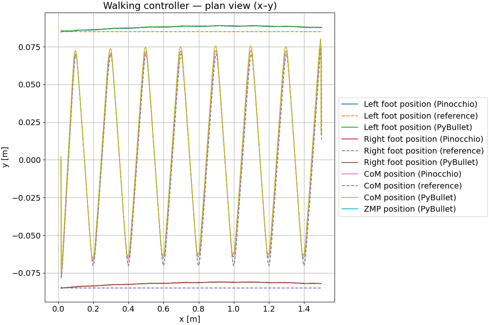

Integration in physical simulator
Introduction
The simulation module validates the entire walking control pipeline, from ZMP-based pattern generation to joint-space motion execution. It provides a reproducible environment to test the controller under realistic dynamics. The robot is simulated in PyBullet, which integrates forward dynamics and computes contact forces during each support phase. The module reproduces the walking sequence defined by the preview controller, including single and double support phases, ZMP transitions, and foot exchanges. The reference trajectories of the center of mass (CoM) and feet are generated by the LIPM + preview control model, then projected into joint space through the inverse-kinematics solver based on Pinocchio.
At each timestep, the Pinocchio kinematic model is updated using the robot state from PyBullet. The desired joint positions are then computed and applied through position control, ensuring consistency between the kinematic model and the simulated robot.
Example
In this example, the controller and inverse-kinematics modules are integrated into PyBullet to test the walking pattern in a simulated environment.
The xhost command is only required if you want to display the GUI interface:
xhost +local:root
docker run --rm -it \
--env DISPLAY \
-v /tmp/.X11-unix:/tmp/.X11-unix:ro \
--device /dev/dri:/dev/dri \
ghcr.io/rdesarz/biped-walking-controller \
python examples/example_4_physics_simulation.py \
--path-talos-data "/" --launch-gui --plot-results
You should get a visualization of the simulation such as the one below:

At the end of the walking sequence, a plot should be displayed. It plots the position of the CoM and foot trajectories on x and y axis:

Code API
The simulation module provides all components required to initialize and manage the physics simulation. It simplifies interaction with the robot, including data extraction and joint configuration. The Simulator class currently implements this interface using PyBullet as the physics backend.
Simulator
Simulator(dt, path_to_robot_urdf, model, launch_gui=True, n_solver_iter=200)
Thin PyBullet wrapper for loading a robot URDF and driving it from joint positions/velocities. Also exposes utilities for camera control, contact-force/ZMP computation, and setter/getter for joints configuration. The robot is loaded at the origin and a flat horizontal plane is added at z=0.
Initialize PyBullet, load ground and TALOS, and set physics.
Parameters:
| Name | Type | Description | Default |
|---|---|---|---|
dt
|
float
|
Fixed simulation time step in seconds. |
required |
path_to_robot_urdf
|
Path
|
Base path containing the URDF data. |
required |
model
|
Any
|
Pinocchio model container used to build pb↔pin joint maps.
Must expose |
required |
launch_gui
|
bool
|
If True, starts PyBullet with GUI. Otherwise uses DIRECT mode. |
True
|
Side Effects
- Connects to PyBullet and configures gravity, time step, and engine params.
- Loads a plane and the TALOS robot in the world.
- Builds maps from PyBullet joint indices to Pinocchio q/v indices.
step
step()
Advance the physics simulation by one fixed time step.
Notes
Uses the engine time step configured in __init__.
reset_robot_configuration
reset_robot_configuration(q)
Hard-reset robot state from a configuration vector.
Parameters:
| Name | Type | Description | Default |
|---|---|---|---|
q
|
(ndarray, shape(nq))
|
Full Pinocchio configuration, including free-flyer (7). Applied to PyBullet base + joints via helper mapping. |
required |
apply_joints_pos_to_robot
apply_joints_pos_to_robot(q)
Send position targets to PyBullet joint position controllers.
Parameters:
| Name | Type | Description | Default |
|---|---|---|---|
q
|
(ndarray, shape(nq))
|
Desired configuration in Pinocchio ordering. |
required |
apply_joints_vel_to_robot
apply_joints_vel_to_robot(v)
Send joint-space velocity targets to the simulator.
Parameters:
| Name | Type | Description | Default |
|---|---|---|---|
v
|
(ndarray, shape(nv))
|
Desired generalized velocities in Pinocchio ordering. |
required |
get_q
get_q(nq)
Read the current configuration vector from PyBullet.
Parameters:
| Name | Type | Description | Default |
|---|---|---|---|
nq
|
int
|
Total configuration size expected by Pinocchio. |
required |
Returns:
| Type | Description |
|---|---|
(ndarray, shape(nq))
|
Configuration with base pose first (x,y,z, qw,qx,qy,qz), then joints. |
update_camera_to_follow_pos
update_camera_to_follow_pos(x, y, z)
Aim the debug camera at a world position.
Parameters:
| Name | Type | Description | Default |
|---|---|---|---|
x
|
float
|
Target position in world frame for the camera to look at. |
required |
y
|
float
|
Target position in world frame for the camera to look at. |
required |
z
|
float
|
Target position in world frame for the camera to look at. |
required |
Notes
Keeps distance, yaw, and pitch fixed.
get_contact_forces
get_contact_forces()
Return the net x-axis contact forces for the right and left foot.
The method queries PyBullet for contacts between the robot and the ground
on each foot link, then uses the private helper _compute_force(...)
to aggregate the force component along the world x-axis.
Requirements
self.robot_id: int PyBullet body id of the robot.self.plane_id: int PyBullet body id of the ground/plane.self.rf_link_id: int Link index of the right foot.self.lf_link_id: int Link index of the left foot._compute_force(contacts) -> tuple[float, Any]Helper that returns the x-axis force [N] as its first element. It should return 0.0 ifcontactsis empty.
Returns:
| Type | Description |
|---|---|
(float, float)
|
|
Notes
- Only contacts with
bodyA=self.robot_id,bodyB=self.plane_id, andlinkIndexAequal to the corresponding foot link are considered. - If a foot has no active contacts, its returned force is expected to be 0.0.
- This method assumes
_compute_forcealready applies the correct Newton third-law sign convention to yield the force exerted on the robot.
draw_points
draw_points(points, colors=None, point_size=5)
Draw or update a set of debug points.
Parameters:
| Name | Type | Description | Default |
|---|---|---|---|
points
|
(array - like, shape(N, 3))
|
World coordinates of points. |
required |
colors
|
(array - like, shape(N, 3))
|
RGB colors in [0,1] per point. |
None
|
point_size
|
int
|
|
5
|
Notes
Uses a persistent debug item so updates replace the existing set (for performance reasons)
get_robot_com_position
get_robot_com_position()
Compute the whole-body center of mass in world coordinates.
Returns:
| Type | Description |
|---|---|
list[float]
|
[x, y, z] position of the CoM in the world frame. |
Method
- Retrieves base inertial COM, then iterates articulated links.
- Mass-weights each link COM and normalizes by total mass.
get_robot_pos
get_robot_pos()
Get the floating base world pose.
Returns:
| Type | Description |
|---|---|
tuple[list[float], list[float]]
|
(position [x,y,z], quaternion [x,y,z,w]) in world frame. |
get_robot_frame_pos
get_robot_frame_pos(frame_name)
Get world pose of a named link frame.
Parameters:
| Name | Type | Description | Default |
|---|---|---|---|
frame_name
|
str
|
Name of the link in the URDF. |
required |
Returns:
| Type | Description |
|---|---|
tuple[tuple[float, float, float], tuple[float, float, float, float]]
|
(position, quaternion) of the link frame in world. Uses PyBullet forward kinematics. |
Raises:
| Type | Description |
|---|---|
KeyError
|
If |
get_zmp_pose
get_zmp_pose()
Estimate the Zero-Moment Point using contact wrenches against the plane.
Returns:
| Type | Description |
|---|---|
ndarray | None
|
[px, py, 0.0] in world if vertical force Fz != 0, else None. |
Method
- Iterates robot–plane contact points.
- Accumulates total contact force F and moment M about world origin using r × f at the contact position.
- ZMP on the ground plane is computed as: px = -M_y / F_z, py = M_x / F_z.
Notes
This assumes a flat ground at z=0 and uses only normal forces reported by PyBullet at each contact.